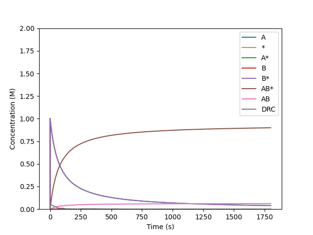

Degree of Rate Control¶
Here we try to reproduce the analysis on the Langmuir-Hinshelwood mechanism of <https://pubs.acs.org/doi/full/10.1021/acscatal.7b00115>.
>>> from overreact import core, api, rates, simulate
>>> scheme = core.parse_reactions("""
... A + * <=> A* # fast to equilibrium
... B + * <=> B* # fast to equilibrium
... A* + B* -> AB*‡ -> AB* + * # RDS
... AB* <=> AB + * # fast to equilibrium
... """)
>>> scheme.compounds
['A', '*', 'A*', 'B', 'B*', 'AB*‡', 'AB*', 'AB']
>>> scheme.reactions
['A + * -> A*', 'A* -> A + *', 'B + * -> B*', 'B* -> B + *', 'A* + B* -> AB* + *', 'AB* -> AB + *', 'AB + * -> AB*']
where * denotes a free surface site.
>>> import numpy as np
>>> from scipy.misc import derivative
>>> from scipy.constants import kilo, calorie
>>> k = rates.eyring(kilo * calorie * api.get_delta(scheme.B, [0, 0, -2.5, 0, -2.5, 15.0, 0.0, -2.5]))
>>> k
array([4.2245e+14, 6.2124e+12, 4.2245e+14, 6.2124e+12,
1.3588e-02, 4.2245e+14, 6.2124e+12])
>>> dydt = simulate.get_dydt(scheme, k)
Now the graph:
>>> import matplotlib.pyplot as plt
>>> y0 = [1., 1000., 0, 1., 0., 0., 0., 0.]
>>> t, y, r = simulate.get_y(dydt, y0, [0.0, 30 * 60.0], method="BDF")
>>> plt.clf()
>>> for i, compound in enumerate(scheme.compounds):
... if not compound.endswith("‡"):
... plt.plot(t, y[i], label=compound)
[...]
>>> drc = [derivative(lambda k: simulate.get_dydt(scheme, k)(0.0, y)[-1], np.array(k), 1e-4) for y in y.T]
>>> plt.plot(t, drc, label="DRC")
[...]
>>> plt.legend()
<...>
>>> plt.xlabel("Time (s)")
Text(...)
>>> plt.ylim(0, 2)
(...)
>>> plt.ylabel("Concentration (M)")
Text(...)
>>> plt.savefig("docs/_static/drc.png", transparent=True)

A one minute simulation of the Langmuir-Hinshelwood mechanism.¶